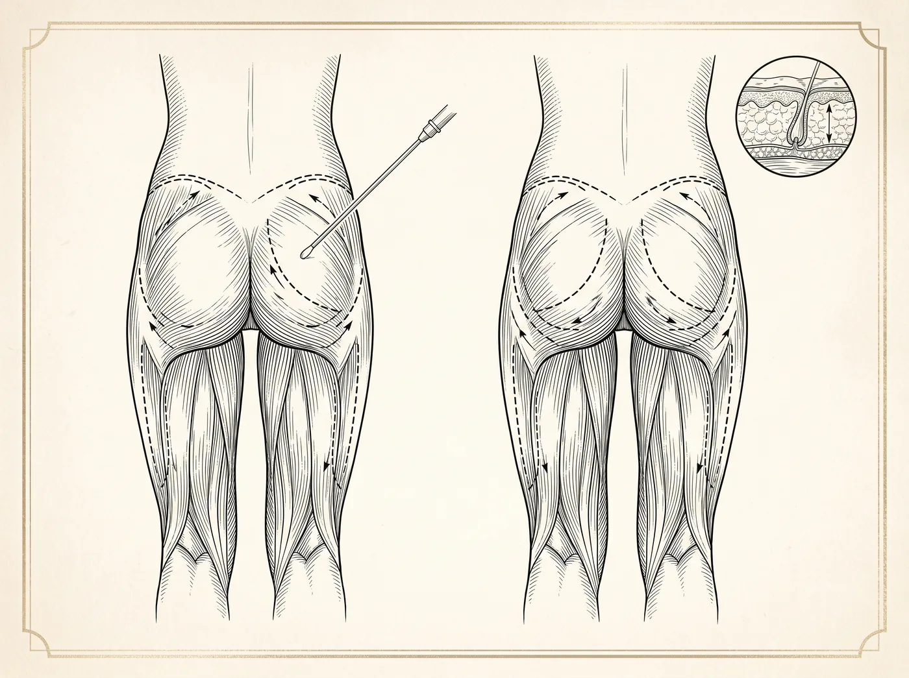

Corpo · Procedimento cirúrgico
A lipoescultura remodela áreas específicas do corpo: remove o excesso de gordura localizada e pode realocá-la para regiões que pedem volume, como os glúteos. É um procedimento de refinamento do contorno — não um método de perda de peso.

Objetivos do procedimento
Todo procedimento cirúrgico envolve riscos. A avaliação individual com um cirurgião plástico é indispensável para indicar o tratamento adequado a cada caso.
Entenda o procedimento
A lipoescultura combina a aspiração da gordura localizada com o refinamento do contorno corporal. Na abordagem de alta definição (HD), o cirurgião trabalha a gordura em diferentes planos — dos mais profundos aos mais superficiais e nos espaços entre os grupos musculares —, com o objetivo de evidenciar o relevo natural da musculatura que já existe sob a pele. Em vez de apenas reduzir volume, a proposta é respeitar e destacar a anatomia de cada região, valorizando as transições e os contornos próprios do corpo. Os planos abordados e aquilo que se aplica a cada pessoa são definidos caso a caso, conforme a anatomia e os objetivos discutidos na avaliação.
Não existe uma técnica única: a abordagem, os recursos utilizados e a extensão do procedimento variam conforme o cirurgião e a indicação. Os detalhes técnicos e o que faz sentido para o seu caso devem ser esclarecidos na consulta. Como todo procedimento cirúrgico, a lipoescultura envolve riscos, e a evolução depende de fatores individuais de cada paciente.
Parte da gordura aspirada durante a lipoescultura pode, quando o cirurgião considera indicado, ser tratada e reaproveitada no próprio paciente — recurso conhecido como enxertia de gordura autóloga. No Hospital Espaço da Plástica, uma das propostas da abordagem de alta definição é enxertar essa gordura preparada também no plano muscular de determinadas regiões, com o objetivo de acentuar o volume e o relevo e, assim, reforçar o contorno pretendido. A literatura médica descreve essa técnica de transferência de gordura para grupos musculares como o peitoral, os músculos dos braços e a panturrilha, entre outros. A indicação, a extensão e as regiões tratadas são sempre individuais e definidas na avaliação.
É importante esclarecer que se trata de uma proposta técnica, e não de um resultado garantido: cada corpo integra a gordura enxertada de maneira particular, e parte do volume pode ser reabsorvida ao longo do tempo. Por envolver o depósito de gordura em planos mais profundos, essa abordagem exige conhecimento anatômico detalhado e critérios específicos, temas que o cirurgião esclarece durante o planejamento. Definir se a enxertia no plano muscular é adequada ao seu caso — e em quais regiões — depende da avaliação individual.
De modo geral, a lipoescultura é considerada para pessoas com peso estável e gordura localizada resistente à dieta e ao exercício — e não como método de perda de peso. Boa saúde geral, ausência de condições que contraindiquem a cirurgia e expectativas realistas são pontos analisados antes de qualquer indicação. A qualidade e a elasticidade da pele, assim como o tônus muscular de cada região, também costumam entrar nessa avaliação, sobretudo quando se pretende evidenciar o contorno.
A indicação — se ela existe, quais áreas tratar e qual abordagem adotar — só pode ser definida em avaliação individual com o cirurgião plástico. Cada corpo responde de forma diferente, e o que é adequado para uma pessoa pode não ser para outra. Por isso, a consulta presencial é o passo indispensável antes de qualquer decisão.
A recuperação é progressiva e varia de pessoa para pessoa, conforme a extensão do procedimento e a resposta de cada organismo. Nos primeiros dias, costumam ocorrer inchaço, sensibilidade nas regiões tratadas e necessidade de repouso relativo, com retorno gradual às atividades e, com frequência, o uso de malha de compressão conforme orientação. O acompanhamento pós-operatório e as orientações da equipe fazem parte desse processo e ajudam a conduzir cada fase, cujos prazos são individualizados e confirmados com o cirurgião.
Como todo procedimento cirúrgico, a lipoescultura envolve riscos, que devem ser esclarecidos antes da decisão — entre eles, inchaço prolongado, equimoses, alterações temporárias de sensibilidade, assimetrias, acúmulo de líquido, irregularidades de contorno e, em situações menos comuns, infecção. A enxertia de gordura no plano muscular acrescenta considerações próprias: exige conhecimento anatômico da região, técnica cuidadosa e, conforme a área tratada, cuidados adicionais, já que a segurança varia de acordo com o local. Por isso, os riscos, as alternativas e as particularidades de cada região fazem parte da conversa com o cirurgião, e a avaliação individual é indispensável para definir se e como o procedimento pode ser realizado.
Realizar a lipoescultura em um hospital voltado à cirurgia plástica significa contar com centro cirúrgico próprio, equipe própria e uma estrutura pensada para esse tipo de procedimento. A presença de equipe de anestesia, a monitorização e um ambiente hospitalar preparado são fatores que contribuem para a segurança do ato cirúrgico. A internação e o pós-operatório imediato acontecem dentro dessa mesma estrutura, com a equipe integrada em todas as etapas.
Nenhuma estrutura elimina os riscos inerentes a um procedimento cirúrgico, mas um ambiente hospitalar dedicado permite acompanhar o paciente de forma contínua, do preparo à recuperação inicial. A avaliação individual segue sendo o passo indispensável para definir se, como e onde o procedimento pode ser realizado com segurança em cada caso.
Perguntas frequentes
A lipoaspiração remove a gordura localizada; a lipoescultura acrescenta a possibilidade de enxertar essa gordura em outras regiões, trabalhando o contorno do corpo como um todo.
Não. O procedimento trata o contorno e a gordura localizada — não substitui dieta, exercício nem tratamentos para perda de peso. O ideal é estar com o peso estável.
As células removidas não retornam, mas as remanescentes podem aumentar de volume com o ganho de peso. Hábitos saudáveis ajudam a manter o contorno alcançado.
Dependem da extensão do procedimento e da avaliação pré-anestésica. O formato é definido pelo cirurgião em conjunto com a equipe de anestesia.
Em geral, sim. O uso de malha e a drenagem linfática costumam fazer parte das orientações pós-operatórias, conforme a prescrição do cirurgião.
O próximo passo
A decisão certa nasce de uma boa conversa. Traga suas dúvidas: a avaliação individual é o primeiro passo de qualquer plano.